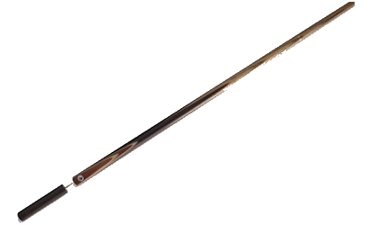
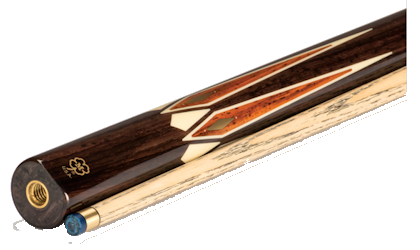
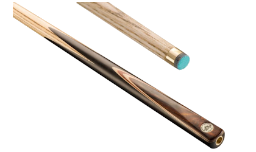
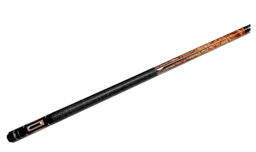

What Are Cues?
Pool cues, also known as billiard cues or simply cues, are essential tools used in cue sports such as pool, snooker, and carom billiards. These cues are slender, tapered sticks typically made of wood, though modern cues may incorporate materials like fiberglass, carbon fiber, or composite materials. The primary purpose of a pool cue is to strike the cue ball, imparting the desired spin and direction to accurately pot other balls on the billiard table. Pool cues consist of various components, including a tip, ferrule, shaft, joint, and butt. The tip, often made of leather, contacts the cue ball, while the shaft provides the main body of the cue. The joint connects the shaft to the butt, allowing for easy assembly and disassembly. Pool cues come in different weights, lengths, and designs to suit the preferences and playing styles of individual players. Players often choose cues based on factors such as cue weight, tip hardness, and overall balance. High-quality cues are prized for their craftsmanship, materials, and the precision they offer in executing shots on the billiards table.
(click the titles for more cue info)

Standard Pool Cue
The standard pool cue has a 57-inch two-piece cue shaft with a ferrule and tip. It’s usually made from either hardwood or fiberglass and has a basic design. The standard pool cue is the most common type of cue used in billiard games.

Snooker Cue
The snooker cue is longer than the standard pool cue, with a length of 57 to 58 inches. It’s usually made from hardwood and has a smaller tip size than the standard pool cue. The extra length provides more control over shots, making it ideal for snooker players.

English Pool Cue
The English pool cue is shorter than the standard pool and snooker cues, with a length of 55 to 57 inches. It’s usually made from hardwood and has a larger tip size of 8 -9 mm. The extra weight provides more power when shooting, making it ideal for players who like to play powerful shots.

American Pool Cue
The American pool cue is the shortest of all types of cues, with a length of 53 to 54 inches. It’s usually made from hardwood and has a tip size of 13 to 14 mm. This cue also has a larger ferrule made of plastic which can help boost the cue’s durability while also providing shock absorption.